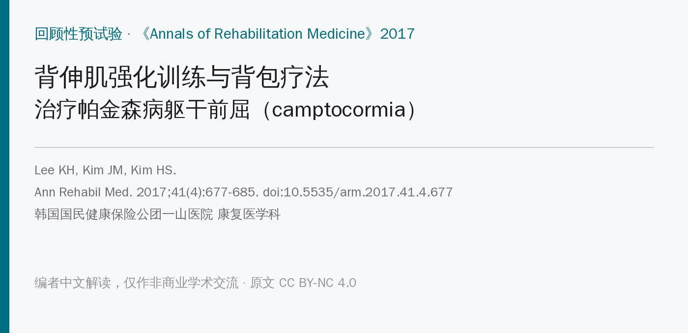
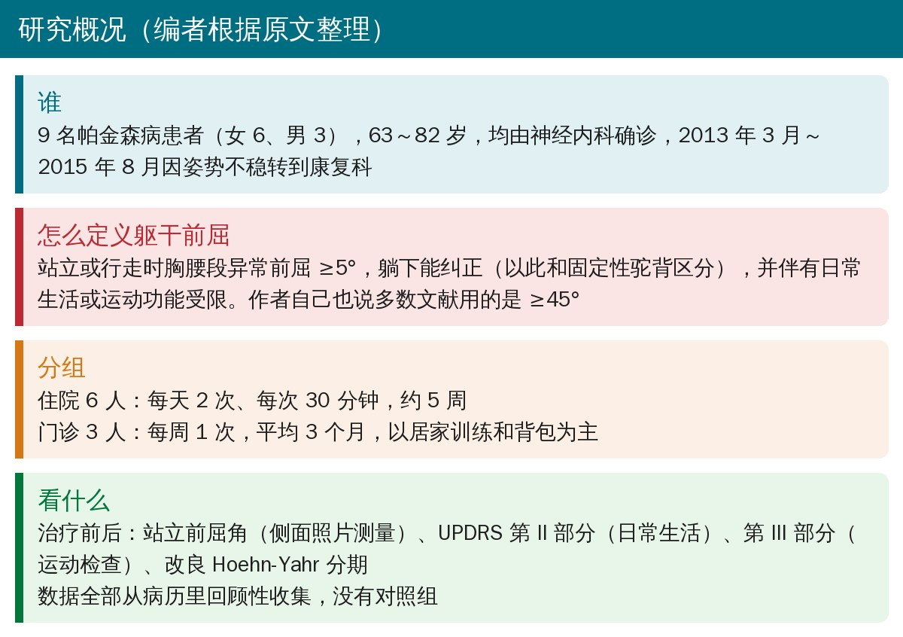
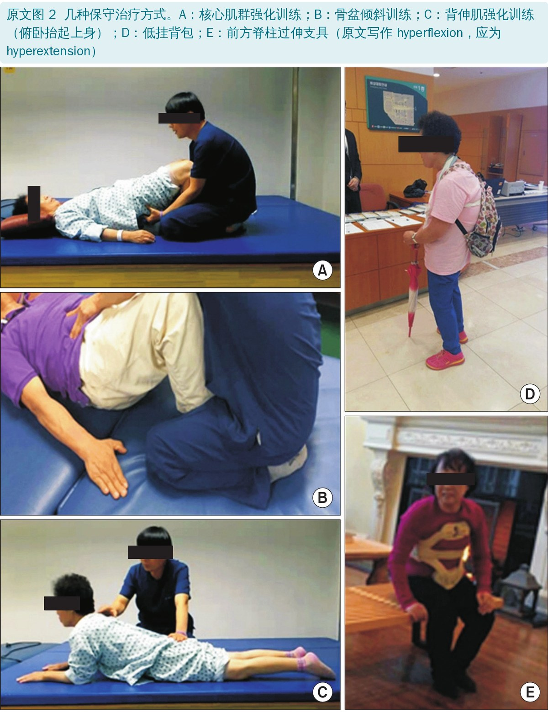
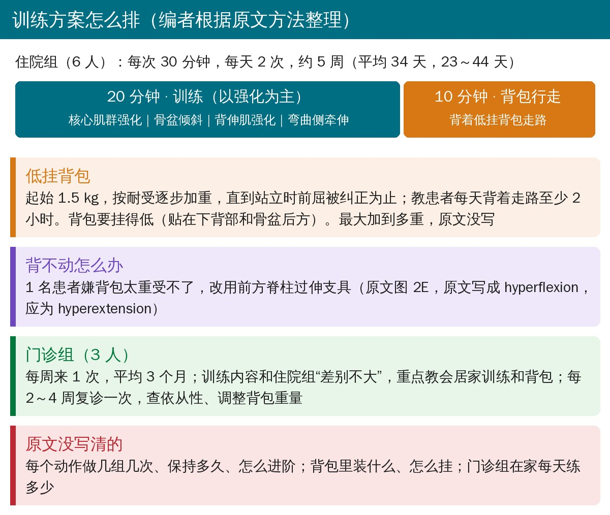
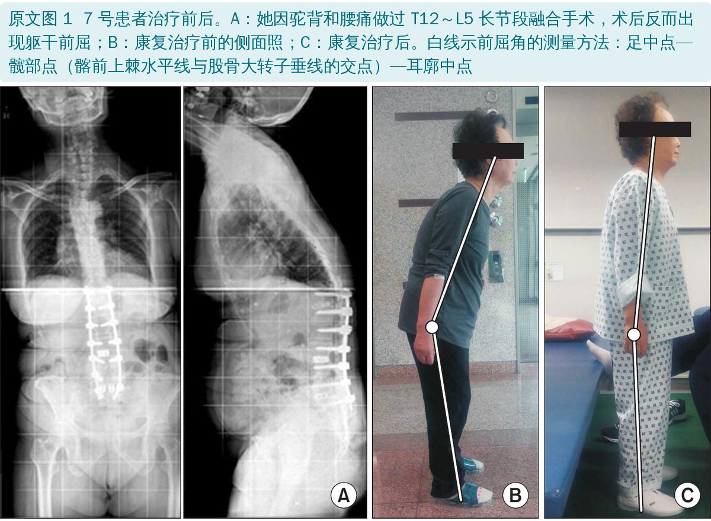
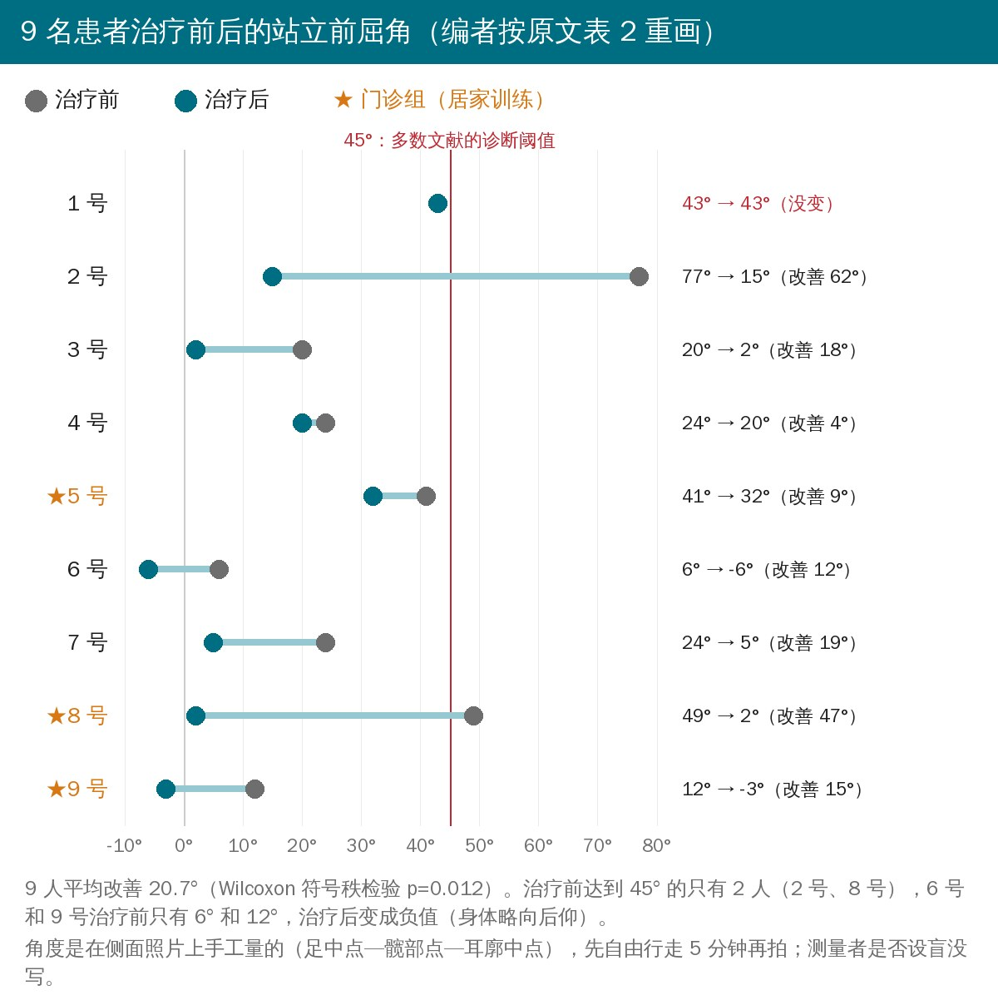
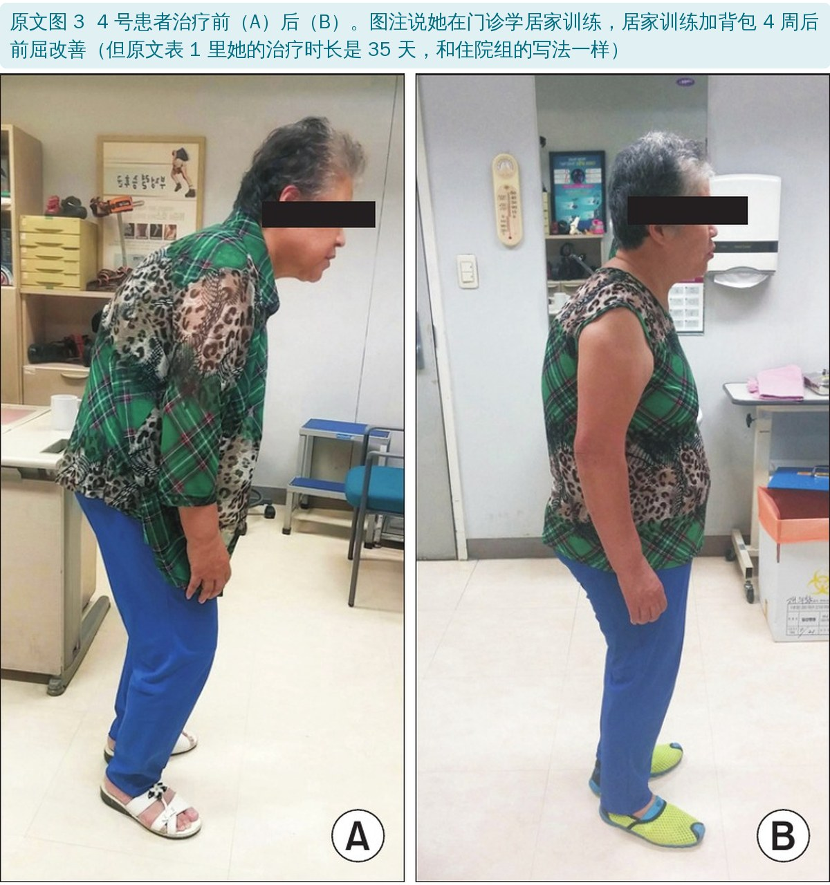
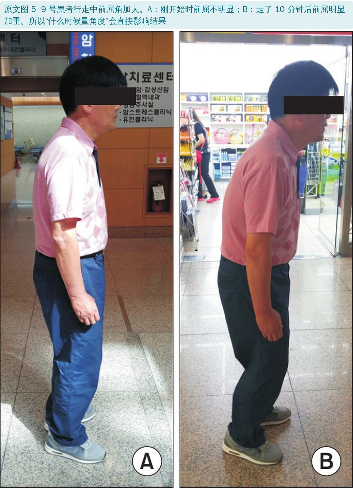
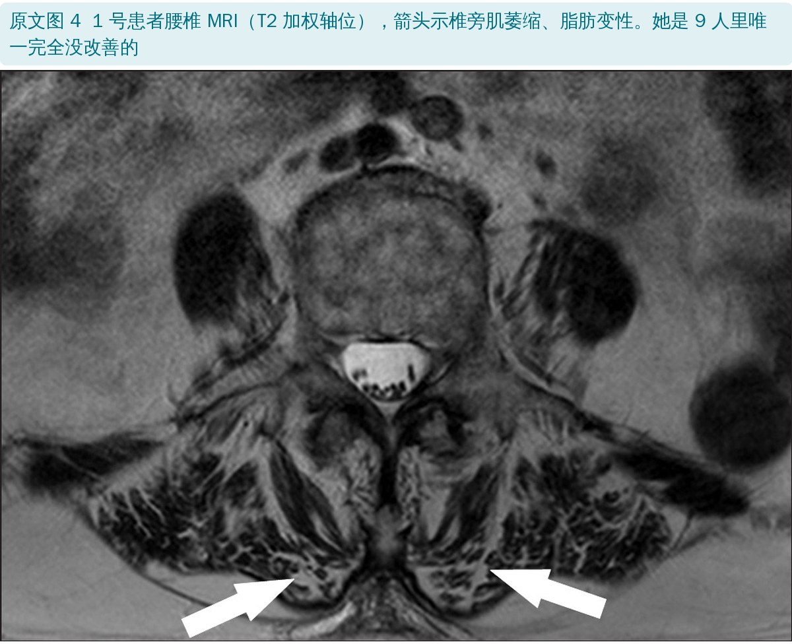
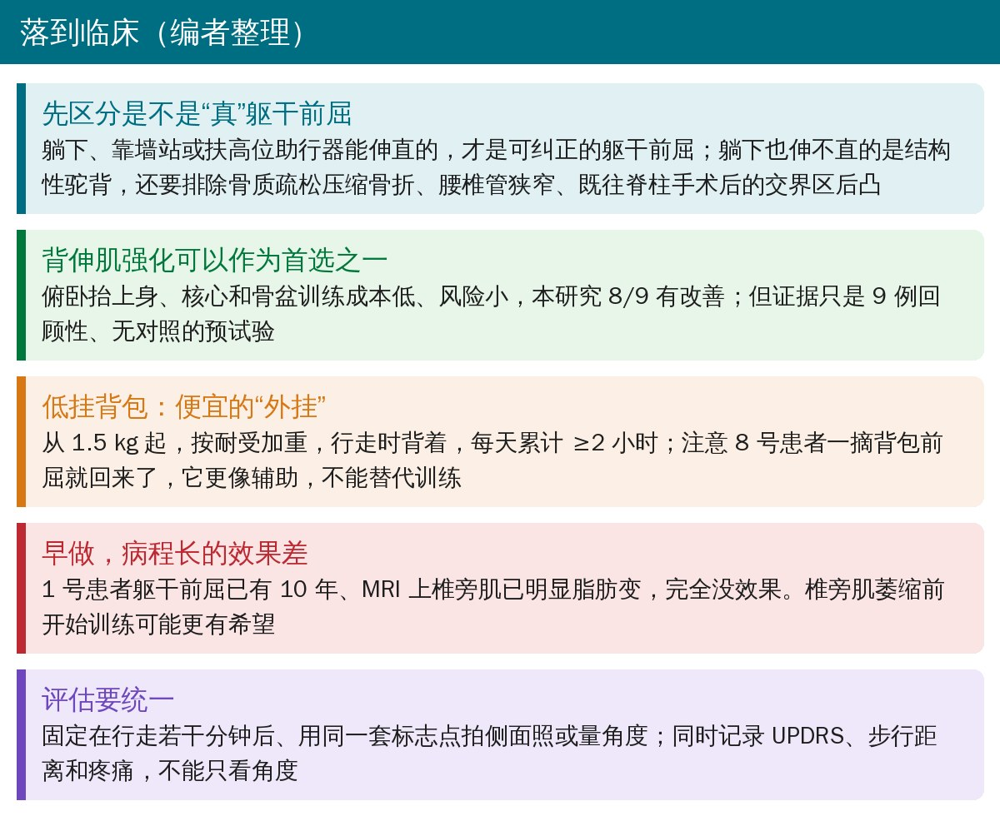

🔖原文信息（编者中文重排）
📚 文献信息
▪ Lee KH, Kim JM, Kim HS. Back extensor strengthening exercise and backpack wearing treatment for camptocormia in Parkinson's disease: a retrospective pilot study. Ann Rehabil Med. 2017;41(4):677-685. doi:10.5535/arm.2017.41.4.677
▪ 中文题目：背伸肌强化训练与背包疗法治疗帕金森病躯干前屈：回顾性预试验
▪ 作者单位：韩国国民健康保险公团一山医院 康复医学科
▪ 研究类型：回顾性病例系列（9 例），无对照组
帕金森病患者走着走着身体越来越往前弯，躺下却能伸直，这叫躯干前屈（camptocormia），原文引用的数据是帕金森病患者中有 3%～17% 会出现。它和普通的驼背不同：驼背是固定的，躯干前屈躺下、靠墙站或扶高位助行器时能纠正。
它的成因到现在还说不清：可能是病情进展，可能是肌张力障碍的一种表现，可能是椎旁肌本身出了问题（肌病），也可能和用药有关。药物、肉毒毒素注射、脑深部电刺激、脊柱矫形手术都有人试过，效果都不确定，手术并发症还多。
这篇韩国研究用的办法很朴素：练背伸肌和核心，再背一个挂得很低的背包走路。9 个人里 8 个前屈角变小了，平均改善约 21°。方法简单、成本低，康复科和社区都能做，所以值得看看具体怎么练；但它只有 9 例、回顾性、没有对照，后面会说清楚能信几分。

• 来源：2013 年 3 月～2015 年 8 月，神经内科确诊帕金森病、因姿势不稳转到康复科的患者
• 诊断：由康复科医生诊断，用“躺下能不能伸直”和固定性驼背区分。作者承认多数文献的标准是胸腰段前屈 ≥45°，但认为这个数字太武断，所以只要求前屈 ≥5°、躺下能纠正、并伴有日常生活和运动功能受限
• 一般情况：女 6 人、男 3 人，63～82 岁；都在吃抗帕金森药，随访期间剂量不变；没人做过脑深部电刺激，也没人有冻结步态
• 合并情况：1 人合并右侧脑桥梗死；3 人做过脊柱手术（4 号椎体成形、5 号腰椎融合和椎体成形、7 号 T12～L5 长节段融合）
• 治疗前都拍了 X 线，排除病理性骨折、了解既往手术情况
表 1 患者基本情况（编者根据原文表 1 翻译，用药一栏略去剂量）
| 编号 | 年龄/性别 | 帕金森病程 | 前屈病程 | 治疗时长 | 随访 | 脊柱手术史 |
|---|---|---|---|---|---|---|
| 1 | 81/女 | 1 个月 | 10 年 | 23 天 | 26 个月 | 无 |
| 2 | 78/女 | 1 个月 | 30 年 | 44 天 | 12 个月 | 无 |
| 3 | 74/女 | 5 个月 | 1 个月 | 30 天 | 8 个月 | 无 |
| 4 | 82/女 | 24 个月 | 36 个月 | 35 天 | 7 个月 | T12 压缩骨折，椎体成形 |
| 5★ | 79/男 | 29 个月 | 25 个月 | 4 个月 | 4 个月 | L4/5 融合；L3/4 椎体成形 |
| 6 | 69/女 | 10 年 | 3 年 | 33 天 | 3 个月 | 无 |
| 7 | 71/女 | 13 年 | 32 个月 | 39 天 | 2 个月 | T12～L5 多次融合手术 |
| 8★ | 80/男 | 5 年 | 5 年 | 3 个月 | 3 个月 | 无 |
| 9★ | 63/男 | 16 个月 | 14 个月 | 2 个月 | 2 个月 | 无 |
★ 治疗时长以“月”计的 3 人，对应原文的门诊组（编者推断，原文没有直接标出谁是门诊患者）。1、2、4 号的前屈病程比帕金森病程还长。


• 频次：每次 30 分钟，每天 2 次，约 5 周（平均 34 天，23～44 天）
• 前 20 分钟：训练，以强化为主：核心肌群强化、骨盆倾斜训练、背伸肌强化（原文图 2C 是俯卧位抬起上身）、前屈一侧的肌肉牵伸
• 后 10 分钟：背低挂背包行走
• 起始重量 1.5 kg，按耐受逐步加重，直到站立时前屈被纠正
• 教患者每天行走时背着至少 2 小时
• 思路：背包挂在身体后下方，把重心往后拉，同时给背伸肌一个持续的“提醒”（编者解释）
• 1 名患者嫌背包太重受不了，改用前方脊柱过伸支具（原文图 2E）
• 每周来 1 次，平均 3 个月，内容和住院组“差别不大”，重点是教会居家训练和背包
• 每 2～4 周复诊一次，检查依从性、调整背包重量
原文没写每个动作几组几次、保持多久、怎么进阶，背包最重加到多少，门诊组在家每天练多少。想照着做，这些只能自己定。

• 站立前屈角：在侧面照片上取三个点：足中点、髋部点（髂前上棘水平线和股骨大转子垂线的交点）、耳廓中点，量两条线的夹角。先自由行走 5 分钟再拍
• UPDRS 第 II 部分：日常生活活动；第 III 部分：运动检查。分数越低越好
• 改良 Hoehn-Yahr 分期：帕金森病严重程度分期，1～5 期
• 全部数据在治疗结束后从病历里回顾性收集，比较治疗前后的差值，用 Wilcoxon 符号秩检验

表 2 治疗前后各项指标（编者根据原文表 2 翻译）
| 编号 | 前屈角（°） 前→后 | UPDRS II 前→后 | UPDRS III 前→后 | H-Y 分期 前→后 |
|---|---|---|---|---|
| 1 | 43 → 43 | 17 → 17 | 27 → 27 | 3 → 3 |
| 2 | 77 → 15 | 10 → 7 | 16 → 11 | 3 → 2.5 |
| 3 | 20 → 2 | 12 → 10 | 21 → 16 | 3 → 2.5 |
| 4 | 24 → 20 | 23 → 14 | 43 → 36 | 4 → 2.5 |
| 5 | 41 → 32 | 15 → 13 | 32 → 28 | 3 → 2.5 |
| 6 | 6 → -6 | 11 → 6 | 40 → 34 | 3 → 2.5 |
| 7 | 24 → 5 | 6 → 5 | 20 → 18 | 2.5 → 2 |
| 8 | 49 → 2 | 13 → 12 | 31 → 28 | 3 → 2.5 |
| 9 | 12 → -3 | 13 → 11 | 27 → 25 | 3 → 2.5 |
| 平均改善 | 20.7 | 2.8 | 3.8 | 0.56 |
| p 值 | 0.012 | 0.011 | 0.012 | 0.007 |
• 前屈角：平均改善 20.7°；改善最多的是 2 号（77° → 15°，改善 62°）和 8 号（49° → 2°）
• 日常生活和运动：UPDRS II 平均降 2.8 分，UPDRS III 平均降 3.8 分，Hoehn-Yahr 分期平均降 0.56 期，都有统计学意义
• 4 号：角度只改善 4°，但 UPDRS II 降 9 分、III 降 7 分、分期从 4 期降到 2.5 期，都是 9 人里最多的。作者据此认为看日常生活和运动功能比只看角度更重要
• 1 号完全没变：所有指标治疗前后一模一样
• 8 号：一开始摘掉背包前屈就回来，走路也变差，但作者说治疗结束 3 个月时，除 1 号外所有人脊柱角度都比治疗前好



• 1 号为什么无效：她的腰椎 MRI 显示椎旁肌明显萎缩、脂肪变；4、5、7 号的 MRI 没有这种改变。作者引用 Schulz-Schaeffer 2015 的观点：前屈病程越长，椎旁肌纤维化、脂肪变越重，干预越难起效，所以介入时机很关键
• 和其他保守治疗比：Gerton 2010 首次报告背包疗法；Schroeteler 2011 用带前臂支撑的高位助行器；de Seze 2008 用胸-骨盆前撑支具加物理治疗（15 例）；Capecci 2014 的随机对照试验（20 例）用的是触觉刺激、牵伸和姿势再教育加肌内效贴。本研究的不同在于以背伸肌强化为核心
• 优点：成本低，配合好的患者在 2～26 个月随访中效果能维持，比手术更容易持续观察
• 测量难题：有的患者开始走路时前屈不明显，走着走着就加重（原文图 5），多数人走不到 10 分钟就弯得走不动了，所以“什么时候量”很难统一；照片上的解剖标志也没有公认标准，容易受测量者主观影响
• 结论：建议把背包、背伸肌强化这类保守治疗作为首选，而不是先做矫形手术或双侧丘脑底核脑深部电刺激；需要更大样本的研究
• 9 例、回顾性、没有对照：病历回顾只能说明“这样做的人大多变好了”，不能排除自然波动、测量误差和安慰剂效应
• 诊断标准放得太宽：≥5° 就算躯干前屈，9 人里治疗前达到 45° 的只有 2 人，6 号只有 6°、9 号只有 12°。按后来 2018 年发表的专家共识诊断标准（Fasano 等），下段型要 ≥30°、上段型要 ≥45°（编者补充），多数受试者够不上；角度小的人“改善”几度，很可能在测量误差范围内
• 角度测量：照片手工测量，没说谁测、是否设盲、重复测量是否一致；作者自己也承认治疗后没拍 X 线，量不准
• Hoehn-Yahr 分期也“改善”了：这是反映病情阶段的分期，康复几周后 8 人都降了半期、4 号降了 1.5 期，说明评分本身可能受评估者期望影响（编者观点）
• 两组混在一起分析：住院组每天两次、门诊组每周一次，强度差别很大，却合并统计，也没分别报告
• 随访数据没给：表 2 只有治疗前后，讨论里“2～26 个月效果能维持”“3 个月时都比治疗前好”都没有数据支撑
• 病例很杂：有前屈 30 年、帕金森才确诊 1 个月的（2 号），也有 3 人做过脊柱手术、1 人合并脑梗；这些人的前屈不一定都是帕金森病引起的
• 优点：给出了每个患者的完整数据，方案简单、可复制，测量方法和失败病例都如实报告；作者没有利益冲突
• 统计方法：方法部分写的是“Wilcoxon 秩和检验”（用于两组独立样本），表 2 和结果写的是“Wilcoxon 符号秩检验”（配对样本）；治疗前后比较应是后者
• “除一人外都有统计学显著改善”：摘要这样写，但统计学显著性是对整组而言的，不能说单个患者“显著改善”
• 支具名称：图 2E 和方法写的是“前方脊柱过屈（hyperflexion）支具”，应为“过伸（hyperextension）”；作者 2015 年的病例报告标题就是 hyperextension brace
• 4 号是住院还是门诊：图 3 图注说她在门诊学居家训练、4 周后改善；但表 1 里她的治疗时长是 35 天，和住院组一样按天计，而按月计的是 5、8、9 号
• “治疗结束 3 个月时”：5、8、9 号的随访期和治疗时长相同（4/3/2 个月），7 号随访只有 2 个月，不可能都在治疗结束后 3 个月复查
• 门诊频次：摘要只说每 2～4 周复诊，方法里又说每周治疗 1 次
• 笔误：UPDRS 多处写成 UPRS，Hoehn-Yahr 写成 Hoenh-Yahr

🔖临床要点（编者整理）
• 先确认是可纠正的前屈：让患者平躺、靠墙站，能伸直才是躯干前屈；伸不直要查骨质疏松压缩骨折、腰椎管狭窄、脊柱术后交界区后凸等（编者补充）
• 背伸肌强化值得一试：俯卧抬上身、核心和骨盆训练成本低、风险小。本研究住院组是每天 2 次、每次 20 分钟训练，强度可以参考
• 低挂背包是便宜的辅助：从 1.5 kg 起，按耐受加重，行走时背着，每天累计 ≥2 小时；注意老年人跌倒风险，先在监护下试走（编者补充）
• 尽早介入：1 号前屈 10 年、椎旁肌已脂肪变，完全无效；病程短、椎旁肌还“有料”的患者可能更值得积极训练
• 评估要固定条件：固定在行走若干分钟后测量、用同一套标志点；同时记录 UPDRS、步行距离、疼痛，不只看角度
欢迎关注骨科康复小黄公众号，获取更多物理治疗的专业知识！
📄参考文献：
Lee KH, Kim JM, Kim HS. Back extensor strengthening exercise and backpack wearing treatment for camptocormia in Parkinson's disease: a retrospective pilot study. Ann Rehabil Med. 2017;41(4):677-685. doi:10.5535/arm.2017.41.4.677
原文 © 2017 Korean Academy of Rehabilitation Medicine，以知识共享署名—非商业性使用 4.0 协议（CC BY-NC 4.0）开放获取。本文为非商业的学术交流中文解读：原文图 1～5 原样引用（图内只有字母和箭头，未作改动），中文说明为图外图注；表格为编者翻译；首图、研究概况卡、训练方案图、前屈角变化图（按原文表 2 重画）、临床要点卡和封面为编者根据原文整理绘制。版权归原作者所有，仅供学习交流，如有侵权请联系删除。